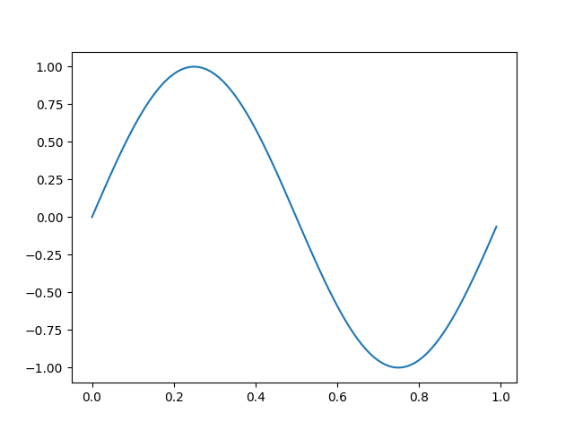

Note
Click here to download the full example code
Coords demo¶
An example of how to interact with the plotting canvas by connecting to move and click events.
from matplotlib.backend_bases import MouseButton
import matplotlib.pyplot as plt
import numpy as np
t = np.arange(0.0, 1.0, 0.01)
s = np.sin(2 * np.pi * t)
fig, ax = plt.subplots()
ax.plot(t, s)
def on_move(event):
# get the x and y pixel coords
x, y = event.x, event.y
if event.inaxes:
ax = event.inaxes # the axes instance
print('data coords %f %f' % (event.xdata, event.ydata))
def on_click(event):
if event.button is MouseButton.LEFT:
print('disconnecting callback')
plt.disconnect(binding_id)
binding_id = plt.connect('motion_notify_event', on_move)
plt.connect('button_press_event', on_click)
plt.show()
Keywords: matplotlib code example, codex, python plot, pyplot Gallery generated by Sphinx-Gallery